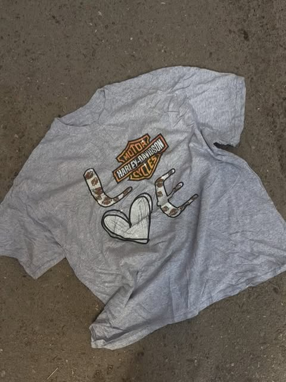

⇆
ΠρινReworked
Σύρε τη μπάρα για να δεις τη διαφορά.
Πώς γίνεται
01
Διαλογή
Κάθε κομμάτι περνάει από τα χέρια μας. Ό,τι σώζεται, σώζεται.
02
Καθαρισμός
Πλύσιμο και απολύμανση πριν αγγίξει ράφι.
03
Rework
Κόψιμο, ράψιμο, patchwork, βαφή. Εδώ το κομμάτι γίνεται μοναδικό.
04
Στο ράφι
Με τιμή που βγάζει νόημα — και χωρίς δεύτερο όμοιο.